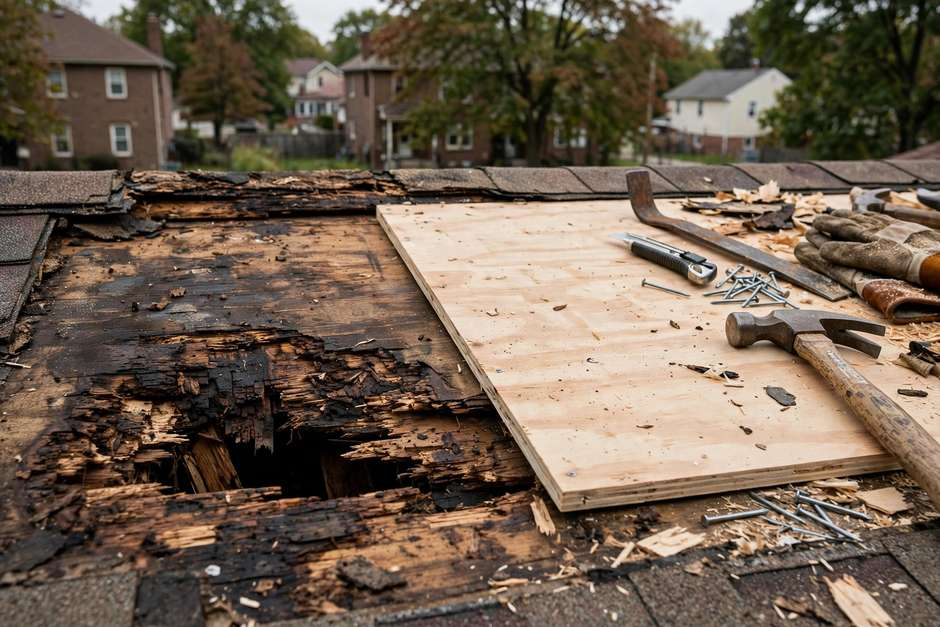
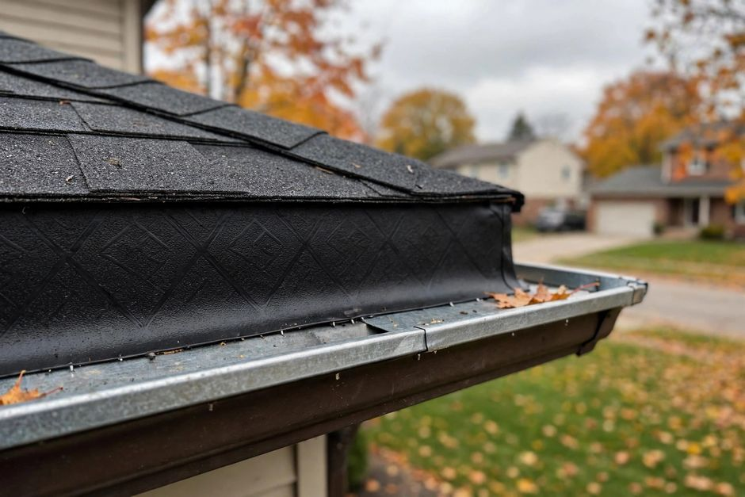
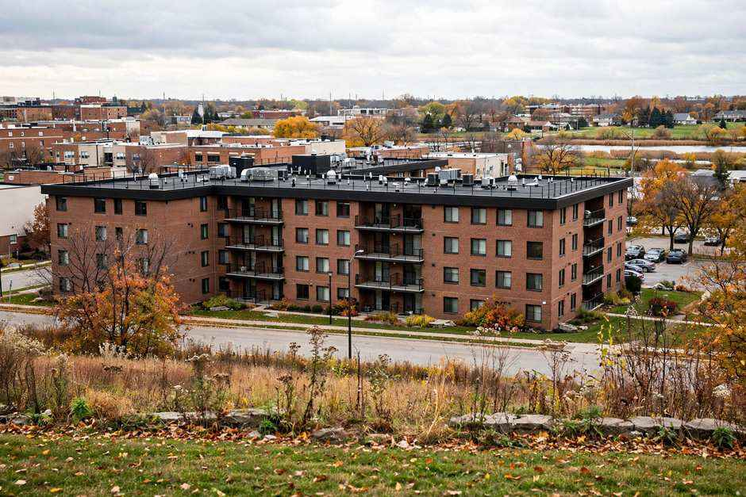

Leaking at the curb after thaw
Flashing and curb failure is the repeat leak point in general guidance. Ask how the flashing, curb and deck would be checked before any scope is agreed.
Skylight replacement Des Plaines IL homeowners ask about is usually a leaking or ageing unit, or skylight work bundled with a re-roof. This page explains why flashing and the curb are the usual leak sources, when reflashing is the conversation and when replacement is, and how fixed and venting units differ — with scope confirmed when you call (224) 802-4866. No brand is named here.
Call (224) 802-4866 during business hours and describe what you are seeing. Hours: Mon–Tue 7:30 AM–7:00 PM, Wed–Fri 7:30 AM–7:30 PM, Sat 8:30 AM–5:00 PM, Sun closed.
Call Now (224) 802-4866 → No online booking. No email. Phone calls only.
A skylight is a hole in the roof with glass in it, and every edge of that hole is a flashing detail. General guidance from NW-suburbs sources points to the flashing and the curb — the raised frame the unit sits on — as the repeat leak point, ahead of the glass itself. That is why the first question about a leaking skylight is usually about the flashing and curb condition, not about the unit alone, and why reflashing and replacement are different conversations with different scopes.
Skylights on mid-century Des Plaines stock are commonly original or aged units, a general inspection topic rather than a claim about any particular house. When a roof is being replaced, the skylight flashing is already exposed, which is why replacement is often bundled with re-roofing — the flashing integration and the curb and deck condition are checked while the roof is open. See the roof replacement page for the wider job and the roof repair page for leak repair in general. Homes in Downtown Des Plaines and Cumberland span many ages, and an aged unit is worth a look before it leaks.
Skylight work is a sequence of small decisions. These are the topics to cover, in the order they usually arise.
Flashing and curb condition come first, then the unit itself — seals, glazing and operation. Ask how the source would be identified and whether the curb and deck condition would be checked.
Reflashing renews the flashing around an existing unit; replacement changes the unit itself. Ask what would make each the sensible option, and get the reasoning in writing.
Fixed units admit light only; venting units open for air. Both are discussed in general terms here. Ask which type suits the room, and confirm scope when you call.
Skylight flashing must tie into the surrounding roof system — underlayment, ice barrier and step flashing — so the roof sheds water as one surface. Ask how that integration is described in the written scope.
Cutting a new opening involves framing and structural questions, and possibly interior and electrical work. This page makes no claim about that scope; ask specifically what is and is not included when you call.
Call (224) 802-4866 and describe the skylight — its age if known, whether it leaks, fogs or will not open, and whether a re-roof is also planned. Ask what skylight scope is available and what the next step would be.
The unit, curb, flashing and surrounding roof are looked at, along with the ceiling below. Ask what the visit covers and how findings are shared with you.
Ask for findings and an estimate in writing, showing whether reflashing or replacement is proposed, the unit type in general terms, and anything that would change the scope if the curb or deck needs work.
Confirm what is included and excluded in writing — including whether any interior, framing or electrical work is part of the scope or separate. No brand is named on this page, and none is promised.
Ask how the finished flashing and unit are checked, what you are shown when the work is done, and what records you keep.
These are the parts of a skylight installation in general terms. None of them is a claim about a specific product or brand.
The raised frame the unit sits on. Curb condition — rot, height, level — shapes whether reflashing or replacement is sensible. Ask whether the curb would be checked.
Flashing pieces that weave with the surrounding roofing at the sides of the curb. Ask how step flashing is tied into the existing roof system.
Ice-barrier underlayment and underlayment layers run beneath and around the flashing. Ask how they are described in the written scope.
A fixed unit admits light and does not open. It has fewer moving parts and fewer seals to fail. Ask whether a fixed unit suits the room.
A venting unit opens, by hand or otherwise, to admit air as well as light. Ask how operation, seals and any controls are described in the scope.
When a roof is replaced, skylight flashing is exposed anyway. Ask whether bundling skylight work with re-roofing makes sense for your roof, and see the roof replacement page for the wider job.
Water appears at the ceiling around a skylight after thaw or heavy rain, while the rest of the roof shows no leak. The flashing and curb are the usual suspects in general guidance.
Ask how the leak source would be traced, whether reflashing or replacement is proposed, and what the curb condition shows.
Moisture sits between panes, or a venting unit sticks and will not close fully. The unit itself, rather than the flashing, is the question.
Ask whether the unit is the problem, what unit types are discussed in general terms, and how the scope would be written.
The roof is being replaced and the skylight is original to the house. The flashing will be exposed during the roof work either way.
Ask whether the skylight should be addressed while the roof is open, and read the roof replacement page for how the jobs fit together.
These are the problems general guidance associates with skylights. They are described here so you can recognise them and ask about them.
Ask a pro →Flashing and curb failure is the repeat leak point in general guidance. Ask how the flashing, curb and deck would be checked before any scope is agreed.
A skylight is sometimes the only daylight option for an interior room. A new opening is separate structural scope — ask specifically what is included when you call.
A skylight admits heat as well as light, and a venting unit changes the air movement. Ask how fixed and venting units differ for that room, in general terms.
Fogging between panes points to the unit's seals; a sticking venting unit points to its operation. Ask how the unit itself would be assessed, apart from the flashing.
“I use WP Exteriors to repaint my roof and do as some tuckpointing on the exterior of my building. Pat and his team were very professional and communicative. They did a good job explaining what needs to be done to my home immediately and what I can plan for in the future. I will definitely be using them in the future.”
Patricia Murray2 months ago · Google review
✓ Google review“Thank you Patrick for doing an amazing job. Great work me and my wife are very happy. Also thanks for being reliable.”
Phil Negron2 months ago · Gutter repairs · Google review
✓ Google review“I recently had the pleasure of working with WP Exterior for my roofing needs, and I must say, I couldn't be more satisfied with the outcome. From the moment I contacted them, it was evident that they truly value their customers. …”
Filip Libera2 years ago · Google review · Verbatim excerpt
✓ Google reviewIt depends on the leak source. If the flashing and curb are the problem and the unit is sound, reflashing is the conversation. If the unit itself has failed — seals, glazing or operation — replacement enters the picture. Ask for the reasoning in writing after the unit, curb and flashing have been looked at.
Third-party guides only, and not this business's prices: Angi (Chicago, September 2026) gives an average of $2,500 per unit installed, ranging from $1,344 to $3,839, while a NW-suburbs source (August 2026) gives reflashing or resealing at $350 to $700. Ranges differ by unit type and scope. Ask for a written estimate for your skylight.
Often it is worth considering, because the skylight flashing is exposed while the roof is open, and the curb and deck condition can be checked at the same time. Ask whether bundling makes sense for your roof, and read the roof replacement page for the wider job.
Permit questions are for the City of Des Plaines Building Division, which can confirm current requirements for the work you have in mind. This page does not import any other city's permit rule, and no permit position is stated here. Ask the Building Division before work starts.
 Metal RoofingStanding seam and exposed-fastener systems, climate fit, and attributed guide lifespans and costs.Explore →
Metal RoofingStanding seam and exposed-fastener systems, climate fit, and attributed guide lifespans and costs.Explore → Roof ReplacementFull tear-off and replacement, the code and climate angles for Des Plaines, and how repair and replacement compare.Explore →
Roof ReplacementFull tear-off and replacement, the code and climate angles for Des Plaines, and how repair and replacement compare.Explore →
Roof RepairLeak repair, flashing and the repair-or-replace decision, explained for Des Plaines roofs.Explore → Roof InspectionWhat an inspection covers, when one matters locally, and how findings are shared in writing.Explore →
Roof InspectionWhat an inspection covers, when one matters locally, and how findings are shared in writing.Explore → Flat Roof RepairLow-slope systems, seams, ponding and tie-ins, with repair-or-replace questions to ask.Explore →
Flat Roof RepairLow-slope systems, seams, ponding and tie-ins, with repair-or-replace questions to ask.Explore →
Emergency Roof RepairActive leaks and storm breaches: what stabilisation means, safety while waiting, and honest scope limits.Explore →Storm Damage Roof RepairHail and wind damage in one place: mechanisms, documentation, and the lawful contractor role.Explore → Insurance Claim HelpThe insurance claim process in general, lawful terms: roles, documentation and Illinois rules.Explore →
Insurance Claim HelpThe insurance claim process in general, lawful terms: roles, documentation and Illinois rules.Explore →Call (224) 802-4866 during business hours to describe your skylight and ask what help is available. Hours: Mon–Tue 7:30 AM–7:00 PM, Wed–Fri 7:30 AM–7:30 PM, Sat 8:30 AM–5:00 PM, Sun closed.
Call (224) 802-4866 →Call (224) 802-4866 to talk about your roof. Describe what you are seeing — a leak, a stain, damage after a storm — and ask what help is available and what the next step would be. There is no online booking and no email contact. Hours: Mon–Tue 7:30 AM–7:00 PM, Wed–Fri 7:30 AM–7:30 PM, Sat 8:30 AM–5:00 PM, Sun closed. The office is at 638 Birchwood Ave, Des Plaines, IL 60018.